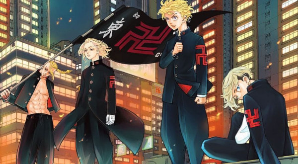

Docmen
Anime@------------------------------@..OBRA..
@---------------------@
Tokyo Revengers é uma obra de 22 volumes produzida por Ken Wakui, escritor e ilustrador oficial da série. O mangá foi serializado em 2017 pela revista Weekly Shōnen (Kodansha) e está para ser finalizado neste ano de 2021, contendo, aproximadamente, 208 capítulos lançados. O enredo ficou bastante conhecido atualmente por conta da recente animação — feita pela Liden Films —, tal que teve a sua estreia em abril e terá cerca de 24 episódios, todos com uma média de 23 minutos cada. A história gira em torno de Takemichi Hanagaki, um homem de 27 anos que, por conta de seu passado, tornou-se uma espécie de "fracassado", possuindo um emprego não muito agradável e uma qualidade de vida um tanto duvidável. Certo dia, após ouvir o noticiário local, o protagonista escutou alguns nomes familiares, visto que os repórteres estavam anunciando a morte de uma garota em específico, Hinata Tachibana, juntamente de seu irmão, Naoto — ambos vieram a falecer pelo mesmo motivo: o crescimento exagerado de uma organização. Apesar de se impressionar com o ocorrido, o rapaz continuou o seu dia tranquilamente; arrumou-se, andou até a estação e, de lá, estava indo em direção ao seu trabalho. No local, o personagem encontrava-se pensativo, principalmente pelas suas questões atuais, o que acabou distraindo sua atenção — já que não percebeu que estava sendo seguido. Ao se aproximar para aguardar a chegada do trem, Takemichi foi empurrado aos trilhos, tendo algumas visões sobre a sua vida, aceitando, por consequência, a sua morte; entretanto, para a sua surpresa, o protagonista foi enviado diretamente ao seu próprio passado (exatamente 12 anos antes do ocorrido). Confuso, o rapaz pensou que estava passando pelo "filme da vida", mas, com o passar das horas, tudo foi ficando ainda mais realista; mais tarde, sem saber o que fazer, Hanagaki foi em direção a um parque para, assim, pensar nas possibilidades e encontrar alguma solução. Depois de murmurar bastante, o protagonista escutou algumas crianças zombando de um certo menino, fazendo com que fosse em direção a elas para que pudesse ajudá-lo. Conseguindo espantar os "valentões", o rapaz começou a conversar com o estudante, dando algumas dicas de como evitar esses tipos de situações, tais que foram ouvidas com muita atenção. Em seguida, ambos se apresentaram, e, para a história ficar ainda mais confusa, Takemichi descobriu que o jovem era Naoto Tachibana, uma das vítimas da Toman. Como sabia o que iria acontecer, o protagonista decidiu, então, contar a verdade para o menino, dizendo que neste mesmo dia, 12 anos no futuro, ele havia caído nos trilhos, e que, por algum motivo, voltou ao passado, além de também revelar que o garoto e sua irmã seriam mortos em julho. O pequeno acreditou em suas palavras, prometendo proteger Hinata do possível atentado, dando-lhe a mão para firmar o combinado. O que eles não sabiam era que esse contato seria um certo tipo de gatilho para que Tachibana voltasse ao futuro — e ao passado novamente —, acontecimento que ficou ainda mais claro após reencontrar Naoto que, depois dos anos terem passado, continuou vivo por conta do aviso que recebeu em sua infância (infelizmente sua familiar não teve a mesma sorte). A partir desse momento, ambos juntaram as suas forças para tentarem acabar com o crescimento da gangue e, assim, evitarem as possíveis mortes dos envolvidos futuramente.
@-------------------------------@Principais
@--------------------@
.Membros.
É o vice-presidente e um dos membros fundadores da Tokyo Manji Gang, sendo um dos principais personagens de Tokyo Revengers. Como o presidente, o vice-presidente Draken também é um indivíduo bastante selvagem. Ele adora uma boa luta e adora enfrentar adversários fortes.
É o membro fundador e líder da Tokyo Manji Gang. Mikey geralmente é um adolescente despreocupado que adora brincar e pregar peças em torno daqueles que considera seus amigos íntimos. Ele se preocupa muito com eles e está determinado a proteger sua honra. Ele raramente mostra qualquer sinal de fraqueza, pois acredita ser a base e o suporte de Toman, e se o próprio pilar demonstrasse fraqueza, Toman também ficaria enfraquecido.
Takemichi é o personagem mais importante de Tokyo Revengers Mesmo sendo o mais fraco. Ele é um jovem que pode viajar no tempo ou um Saltador no tempo. Para salvar sua namorada Hinata Tachibana e, com o tempo, todos de quem ele gosta, ele decide se tornar um membro importante em Toman e salvá-los.